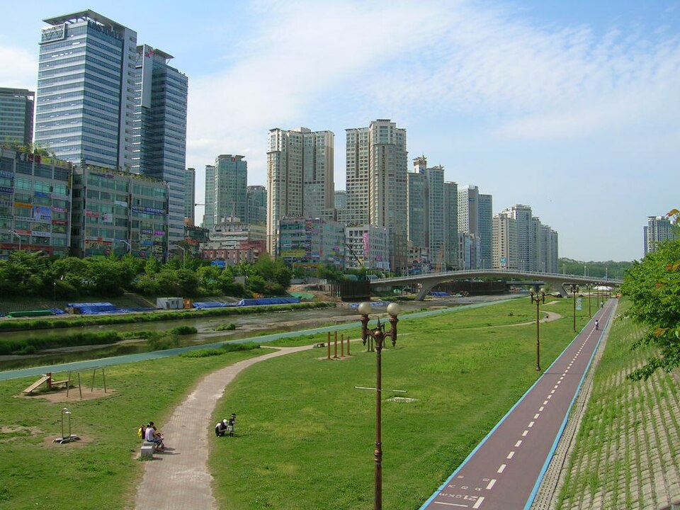

성남 검정고시 — 남은 기간이 짧을 때 과목 고르는 순서

준비를 늦게 시작하신 분들이 가장 많이 하는 선택은 모든 과목을 조금씩 다 보는 것입니다. 그런데 시간이 적을수록 이 방법이 가장 안 통합니다. 어느 과목도 점수가 되는 선까지 못 올라가기 때문입니다. 경기 성남 검정고시를 짧은 기간에 준비하실 때, 과목을 어떤 순서로 고르면 되는지 정리했습니다.
점수가 빨리 오르는 과목부터 잡으세요
같은 시간을 써도 과목마다 올라오는 속도가 다릅니다. 외워서 맞히는 비중이 큰 과목은 투입한 만큼 비교적 빨리 올라오고, 앞 단원을 알아야 뒤가 되는 과목은 시간이 더 걸립니다. 남은 기간이 짧다면 전자부터 손대는 편이 유리합니다.
순서를 거꾸로 잡으면 시간은 다 썼는데 올라온 과목이 하나도 없는 상태로 시험을 맞게 됩니다. 반대로 빨리 오르는 과목에서 먼저 여유를 만들어 두면, 느린 과목에 쓸 시간이 그만큼 늘어나고 마음도 훨씬 편해집니다.
검정고시는 평균으로 보는 시험입니다
검정고시는 평균 60점이 합격선이고, 과목별로 합격이 인정되는 제도도 있습니다. 즉 모든 과목을 고르게 잘할 필요가 없습니다. 잘 나오는 과목에서 평균을 끌어올려 두면, 유독 안 되는 과목 하나가 있어도 전체가 흔들리지 않습니다.
그래서 짧은 기간의 계획은 "전부 몇 점까지"가 아니라 "어느 과목에서 몇 점을 만들어 평균을 맞출 것인가"로 세우는 게 맞습니다. 이 기준이 서면 무엇을 덜 해도 되는지가 자동으로 정해집니다.
버릴 범위를 먼저 정하세요
단기 준비에서 제일 어려운 건 안 볼 부분을 정하는 일입니다. 다 봐야 할 것 같아서 못 버리고, 못 버려서 진도가 안 나갑니다. 하지만 시간이 정해져 있다면 버리는 건 선택이 아니라 전제입니다.
기준은 간단합니다. 문제를 풀어 보고 손이 아예 안 나가는 단원, 설명을 들어도 한 번에 안 잡히는 단원은 뒤로 미루시면 됩니다. 대신 조금만 보면 될 것 같은 단원, 이미 반쯤 아는 단원을 확실하게 끝내는 쪽에 시간을 쓰는 편이 점수로 돌아옵니다.
마지막 2주는 새 내용을 넣지 마세요
막판에 새 단원을 시작하면 그 단원도 안 되고 앞서 본 것도 흐려집니다. 마지막 구간은 봤던 것을 다시 꺼내는 데만 쓰시길 권합니다. 풀었던 문제 중 틀린 것만 다시 풀고, 정리해 둔 용어를 다시 읽는 정도면 충분합니다.
이 시기에 가장 효과가 큰 건 시간을 재고 한 과목을 통째로 풀어 보는 것입니다. 아는 내용인데 시간이 모자라서 못 푸는 경우가 생각보다 많습니다. 자료를 더 모으는 것보다, 가진 것 중 한 회분을 끝까지 풀어 보는 쪽이 남은 기간에 훨씬 도움이 됩니다.
성남에서 이렇게 함께합니다
저희는 1:1 맞춤 과외라 첫 수업에서 과목별로 짧게 풀려 보고, 지금 어느 과목이 가장 빨리 올라올 수 있는지부터 확인합니다. 그 결과로 과목 순서와 주간 분량을 정하고, 볼 범위와 미룰 범위를 함께 그어 드립니다. 성남과 분당·수정·중원 등 인근 지역은 방문 수업이 가능하고, 퇴근이 늦거나 이동이 부담스러우시면 화상(줌) 수업으로 집에서 그대로 진행합니다.
관련 검색어: 성남검정고시 · 성남검정고시과외 · 성남시검정고시 · 분당검정고시과외 · 성남고졸검정고시